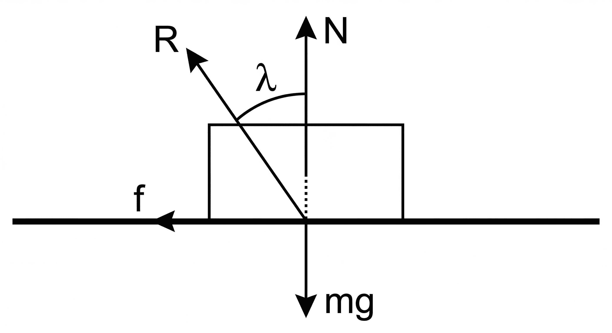
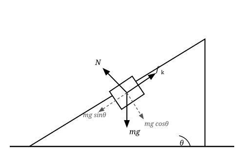
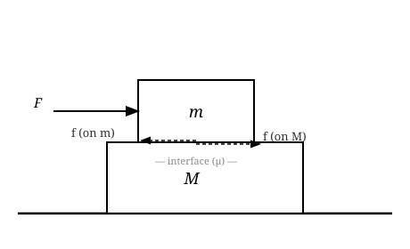

| Type | When | Formula |
|---|---|---|
| Static friction $f_s$ | Body at rest, tendency to move | $f_s \le \mu_s N$ (self-adjusting) |
| Limiting friction | Just about to move | $f_{s,max} = \mu_s N$ |
| Kinetic friction $f_k$ | Body already sliding | $f_k = \mu_k N$ (constant) |
| Rolling friction | Body rolling | Much smaller than $f_k$ |
Always: $\mu_s > \mu_k > \mu_{rolling}$

$$\tan\lambda = \mu \qquad \text{(angle of friction)}$$
$$\tan\theta_r = \mu_s \qquad \text{(angle of repose = angle of friction)}$$
At $\theta > \theta_r$ the block slides; at $\theta = \theta_r$ it is on the verge of sliding.

| Condition | Formula |
|---|---|
| Normal force | $N = mg\cos\theta$ |
| Sliding down (friction up the slope) | $a = g(\sin\theta - \mu_k\cos\theta)$ |
| Pushed up (friction down the slope) | $a = g(\sin\theta + \mu_k\cos\theta)$ |
| Just about to slide | $\tan\theta = \mu_s$ |

Block $m$ on top of block $M$, force $F$ on $m$, $\mu$ between them, smooth floor.
$m_1$ on rough table ($\mu_k$), $m_2$ hanging. Moves if $m_2 > \mu_s m_1$.
$$a = \frac{m_2 g - \mu_k m_1 g}{m_1+m_2}, \qquad T = \frac{m_1 m_2 g(1+\mu_k)}{m_1+m_2}$$
Force $F$ at angle $\theta$ above horizontal. As $\theta$ increases, $N$ decreases → friction decreases, but horizontal component also decreases. Optimal angle:
$$\theta_{opt} = \tan^{-1}(\mu) = \lambda \qquad \text{(angle of friction)}$$
$$F_{min} = \frac{\mu mg}{\sqrt{1+\mu^2}}$$
When a body rolls without slipping, the contact point has zero velocity relative to ground:
$$v_{CM} = r\omega$$
Ladder of mass $m$, length $L$, leaning at angle $\theta$ against smooth wall, rough floor ($\mu$).
Conditions for equilibrium: $\sum F = 0$ and $\sum \tau = 0$
Taking torques about base:
$$N_w \cdot L\sin\theta = mg\cdot\frac{L}{2}\cos\theta \implies N_w = \frac{mg}{2\tan\theta}$$
For not slipping: $f = N_w \le \mu N_f = \mu mg$
$$\tan\theta \ge \frac{1}{2\mu} \qquad \text{(minimum angle for ladder not to slip)}$$
$$Q = f_k \cdot s_{rel}$$
| Concept | Formula |
|---|---|
| Max static friction | $\mu_s N$ |
| Kinetic friction | $\mu_k N$ (constant) |
| Angle of repose | $\tan\theta_r = \mu_s$ |
| Incline sliding down | $g(\sin\theta - \mu_k\cos\theta)$ |
| Incline pushed up | $g(\sin\theta + \mu_k\cos\theta)$ |
| Min force (optimal angle) | $\mu mg/\sqrt{1+\mu^2}$ |
| Rolling condition | $v_{CM} = r\omega$ |
| Ladder min angle | $\tan\theta \ge 1/(2\mu)$ |
| Heat generated | $\mu_k N \cdot s_{rel}$ |